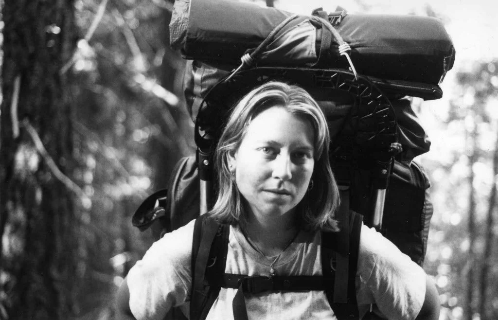
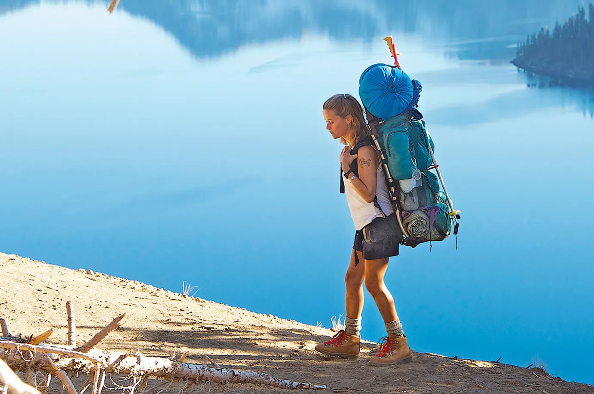
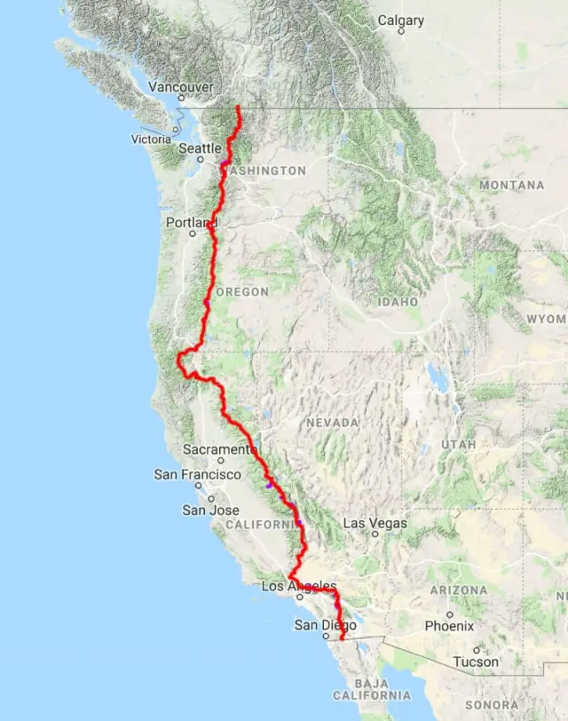

01
Cheryl
Uma protagonista marcada por fragilidade e força, que transforma a caminhada em um processo de reencontro consigo mesma.
DRAMA • BIOGRAFIA • AUTODESCOBERTA
Uma jornada intensa sobre perda, coragem e reconstrução. Após enfrentar momentos difíceis, Cheryl Strayed decide atravessar a Pacific Crest Trail em busca de si mesma.
Sobre o filme
Wild acompanha Cheryl Strayed, uma mulher que decide percorrer sozinha uma das trilhas mais longas dos Estados Unidos depois de viver perdas, escolhas difíceis e uma profunda sensação de desorientação. A caminhada se torna uma experiência física e emocional, marcada por dor, memória, silêncio e transformação.
Jornada

Uma protagonista marcada por fragilidade e força, que transforma a caminhada em um processo de reencontro consigo mesma.

Mais do que um objeto de viagem, a mochila representa o peso das memórias, das escolhas e de tudo aquilo que Cheryl precisa aprender a carregar.

A Pacific Crest Trail aparece como um espaço de silêncio, desafio e transformação, onde cada passo revela uma nova camada da personagem.
Curiosidades
Em Wild, a caminhada é mais do que um deslocamento. Ela se torna uma linguagem visual para dor, respiro, memória e recomeço.
O filme é inspirado na história real de Cheryl Strayed e em sua travessia pela Pacific Crest Trail.
A caminhada não representa apenas deslocamento geográfico, mas também um processo de enfrentamento das próprias dores.
As paisagens funcionam como parte essencial da narrativa, criando uma atmosfera de isolamento, beleza e reflexão.
Chamada
Uma landing page inspirada em cinema, natureza e autodescoberta, desenvolvida com HTML, CSS e JavaScript puro.
Ir para contatoFAQ
Uma história sobre perda, resistência e cura. Aqui estão algumas respostas rápidas para navegar pelo universo do filme.
Wild fala sobre a jornada de Cheryl Strayed, que decide atravessar uma longa trilha para lidar com perdas, arrependimentos e a busca por reconstrução pessoal.
Sim. O filme é baseado na história real de Cheryl Strayed e em seu livro de memórias.
O principal tema é a autodescoberta. A trilha funciona como metáfora para cura, resistência e recomeço.
A personagem é interpretada por Reese Witherspoon.